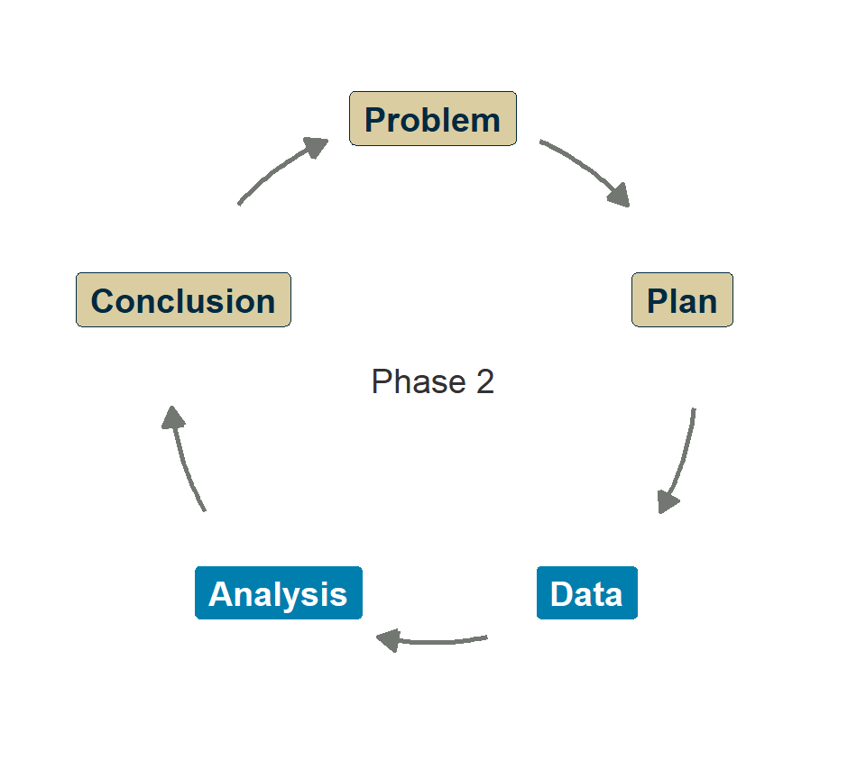
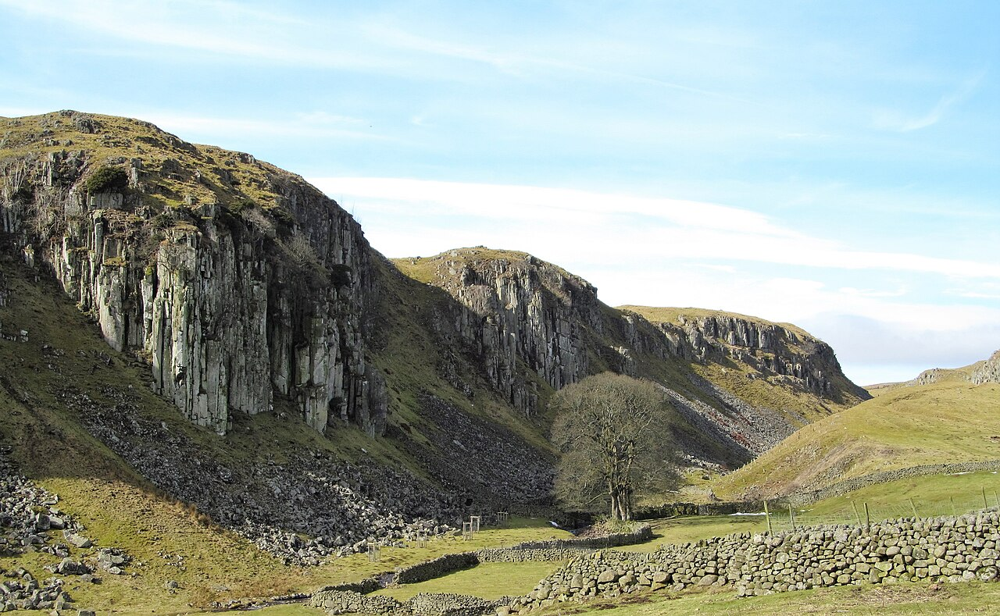
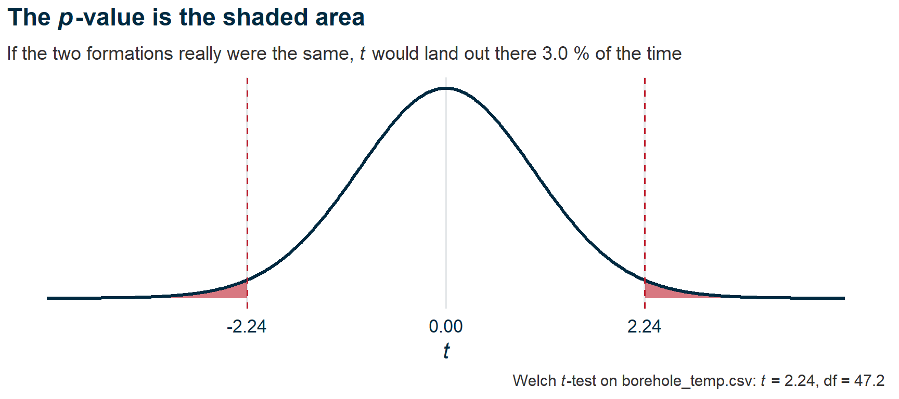
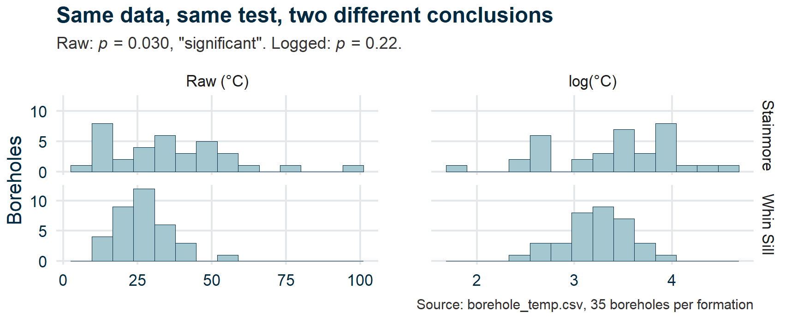
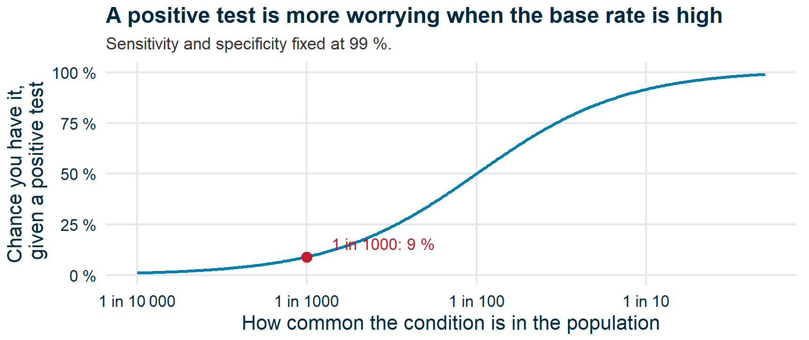

Testing hypotheses
Research Skills — Week 6
Recap
Recap
- The null world
- Interpret a t-test
- Assumptions
- Check your assumptions
- The base rate fallacy
- Plan your test
- Wrap-up
Where we are
- Week 3: the logic of hypothesis testing (conceptual)
- Week 5: experimental design, controls, confounders
This week: the formal machinery. How do you tell a real difference from a fluke?
And then you’ll learn why the answer can mislead you.
Questions?

Submit questions:
PollEv.com/geol
text geol to 07480 781235
The null world
- Recap
The null world
🎓💻 Concept block 1
- Interpret a t-test
- Assumptions
- Check your assumptions
- The base rate fallacy
- Plan your test
- Wrap-up
Is the difference real?
Boreholes in the Stainmore Formation run hotter, on average, than boreholes in the Whin Sill.
“Is this difference larger than we’d expect by chance?”

The Whin Sill at Holwick Scars, Teesdale.
Gordon Hatton / Geograph, CC BY-SA 2.0
Five steps, every test
- Measure δ — the one number you care about. Here: Stainmore’s mean temperature minus Whin Sill’s.
- Build a null world — a world where δ really is zero. Simulate it: shuffle the formation labels, recompute δ, repeat.
- Drop your δ into it. Does it look at home?
- Count how often the null world makes a δ at least as extreme. That fraction is the p-value.
- Decide, against a standard you set before you looked.
A world where formation doesn’t matter

w06-null-world.R · After Heiss (2026), Null worlds
Build the null world
SD or SE?

SD: spread of the boreholes. SE: spread of δ between samples.
What would the null world be?
For each claim: what would you shuffle, simulate, or hold fixed?
- The same 15 boreholes, logged in 2005 and again in 2025, read warmer now.
- HolmesCo struck water in 8 of its 10 boreholes, beating the regional rate of 50 %.
- Downstream wells have more sulphate than upstream ones. The wells were sampled in upstream–downstream pairs, one pair per site.
This is a t-test
A t-test asks the same question with a formula, instead of a shuffle:
- Assume no difference: the null world (the null hypothesis)
- Calculate how far apart the means are, relative to the variability (→ t-statistic)
- Ask: if there were really no difference, how often would we see a t this extreme? (→ p-value)
Live demo
Reading the output
t = 2.2419, df = 47.179, p-value = 0.02971
95 percent confidence interval:
0.8648363 15.9694494| Element | Meaning |
|---|---|
| t-statistic | How many SEs apart the means are: 8.4 / 3.75 ≈ 2.24 |
| p-value | How surprising, in the null world (where H₀ is true) |
| 95 % CI | Plausible range for the true difference |
What “how often” means

Interpret a t-test
- Recap
- The null world
Interpret a t-test
💬✏️ Exercise 1
- Assumptions
- Check your assumptions
- The base rate fallacy
- Plan your test
- Wrap-up
Write one sentence
I’m showing you R output from a t-test.
Write one sentence interpreting this result for a policy audience.
Then we’ll compare.
A common mistake
“p = 0.03 means there’s a 3 % chance the null is true.”
Wrong. But extremely common. We’ll come back to this.
Assumptions
- Recap
- The null world
- Interpret a t-test
Assumptions
🎓 Concept block 2
- Check your assumptions
- The base rate fallacy
- Plan your test
- Wrap-up
Every test rests on assumptions
For the t-test:
- Independence — observations don’t influence each other
- Normality — data within each group are roughly normal
- Equal variance — groups have similar spread (Student’s t; Welch’s t relaxes this)
How to check
| Assumption | Check |
|---|---|
| Normality | Histogram, QQ plot, shapiro.test() |
| Equal variance | Side-by-side points or violins, Levene’s test |
| Independence | Think about the study design |
When assumptions are violated
A skewed variable can produce misleading p-values.

HolmesCo stopped at the first test
⚒️ HolmesCo
Geological Consultants Since 2019
“Our Results Are Never Skewed”™
Borehole Temperature Survey — Statistical Analysis
t-test on raw values: p = 0.03 → “Significant! Drill the Stainmore.”
t-test on log-transformed values: p = 0.22 → not in the report.
The “significant” result was an artefact of skewness.
Check your assumptions
- Recap
- The null world
- Interpret a t-test
- Assumptions
Check your assumptions
✏️💻 Exercise 2
- The base rate fallacy
- Plan your test
- Wrap-up
In WebR
Given a dataset:
- Make histograms of each group
- Decide whether to transform
- Run
t.test()before and after transformation - Compare: did the conclusion change?
Attendance
The base rate fallacy
- Recap
- The null world
- Interpret a t-test
- Assumptions
- Check your assumptions
The base rate fallacy
🎓💬 Concept block 3
- Plan your test
- Wrap-up
Warm-up: Monty Hall
Some of you simulated the Monty Hall problem in Python last year.
Switching wins 2/3 of the time. But your gut says 50/50.
Why? Because your gut ignores the information the host gave you when they opened a door.
The distinction between P(win) and P(win | what you now know) is also the crux of the base rate fallacy.
The medical test
A disease affects 1 in 1000 people.
A test is 99 % accurate (99 % sensitivity, 99 % specificity).
You test positive.
What’s the probability you have the disease?
Cast your vote
PollEv.com/geol
text geol to 07480 781235
The arithmetic
Out of 100 000 people:
| Has disease | No disease | Total | |
|---|---|---|---|
| Test positive | 99 | 999 | 1098 |
| Test negative | 1 | 98 901 | 98 902 |
| Total | 100 | 99 900 | 100 000 |
P(disease | positive) = 99 / 1098 ≈ 9 %
Not 99 %. Nine percent.
Why is it so low?
Because the disease is rare.
The base rate matters enormously.

Even a very accurate test produces many false positives when the condition is uncommon.
HolmesCo strikes gold
⚒️ HolmesCo
Geological Consultants Since 2019
“Where There’s a Test, There’s Gold”™
Press Release — Major Gold Discovery in County Durham!
“Our assay (95 % accurate) detected gold in 54 of 1000 soil samples. 54 confirmed hits!”
How many hits are real?
✏️ Your turn, as a desk
Suppose 1 in 1000 samples really contains gold. Fill in the table. How many of HolmesCo’s 54 hits are real?
| Gold present | No gold | Total | |
|---|---|---|---|
| Assay positive | |||
| Assay negative | |||
| Total | 1000 |
The reality
| Gold present | No gold | Total | |
|---|---|---|---|
| Assay positive | ~1 | ~50 | ~51 |
| Assay negative | ~0 | ~949 | ~949 |
| Total | 1 | 999 | 1000 |
Expected: about 51 hits, 1 of them real. HolmesCo found 54.
Is 54 different from 51? Is it different from 50 hits and no gold?
Connection to p-values
A p-value tells you: P(data | H₀)
How surprising is this data if the null is true?
What you actually want: P(H₀ | data)
How likely is the null to be true given this data?
These are not the same thing. The difference depends on the base rate.
“How plausible was this before we tested?”
Plan your test
- Recap
- The null world
- Interpret a t-test
- Assumptions
- Check your assumptions
- The base rate fallacy
Plan your test
✏️ Integrative exercise
- Wrap-up
For your project
Discuss with your group:
- What comparison will you test?
- What’s your null hypothesis?
- What’s your prior expectation — plausible or a long shot?
- What assumptions should you check?
Write 3–4 sentences.
Wrap-up
- Recap
- The null world
- Interpret a t-test
- Assumptions
- Check your assumptions
- The base rate fallacy
- Plan your test
Wrap-up
Key points
- A t-test compares two groups — but check the assumptions first
- A p-value is P(data | H₀), not P(H₀ | data)
- The base rate determines whether a “significant” result is real
- Always ask: “How plausible was this before I tested?”
Exit ticket
A t-test comparing two groups returns p = 0.04. Which statement is correct?
PollEv.com/geol
text geol to 07480 781235
Any questions we missed?
Submit questions:
PollEv.com/geol
text geol to 07480 781235
Next time
Application session: “First tests”
You’ll run your first real tests on your project data.
Remember: a significant p-value is the start of the conversation, not the end.